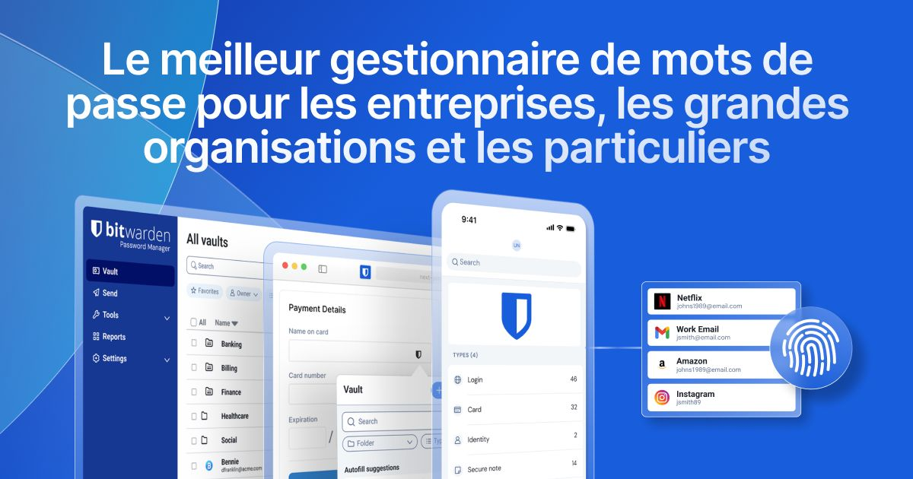
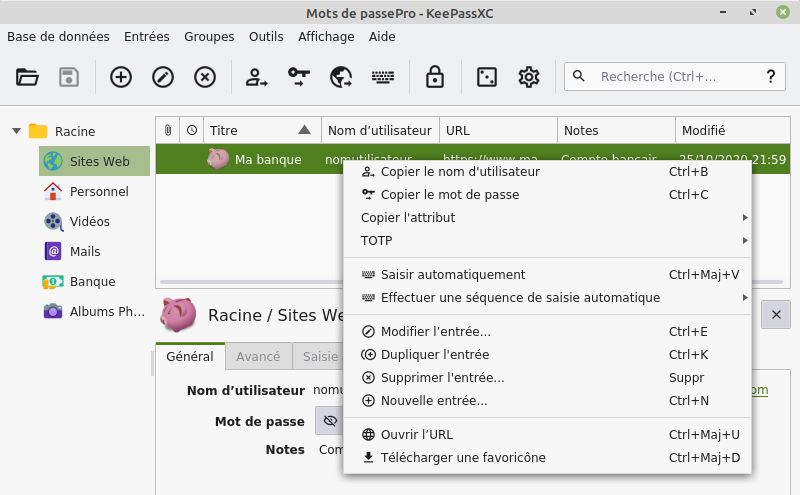

La fin des mots de passe mémorisés : Quel gestionnaire choisir pour votre entreprise ?
Allan ColinetPublié le 23 juillet 2026
Post-it sous le clavier, carnet dans le tiroir, ou pire : le fameux
"PrenomAnnee!" utilisé sur absolument tous vos comptes
professionnels et personnels. Si vous vous reconnaissez dans ces
habitudes, votre activité est vulnérable.
Aujourd'hui, retenir des dizaines de mots de passe complexes est
humainement impossible. C'est là qu'intervient le
gestionnaire de mots de passe. Véritable coffre-fort
numérique, il mémorise tout à votre place et sécurise vos accès. Face
à la multitude de solutions, laquelle choisir pour une TPE/PME ou un
cabinet de soins ?
Bitwarden : Le champion du Cloud et du travail en équipe

Pour la majorité des PME,
Bitwarden
est aujourd'hui la solution de référence. Contrairement à des outils
grand public, il est Open Source. Son code est public et
audité par des experts, garantissant l'absence de failles cachées.
Avantages
Synchronisation fluide sur tous vos appareils (PC, Mac,
Smartphone).
Partage sécurisé en équipe (idéal pour partager l'accès à un
outil sans dévoiler le mot de passe).
Version gratuite extrêmement généreuse pour un usage individuel.
Inconvénients
Données stockées dans le Cloud (bien que chiffrées de bout en
bout).
Nécessite une connexion internet pour la première
synchronisation.
KeePassXC : Le contrôle absolu et local

Si la souveraineté totale de vos données est une priorité absolue,
KeePassXC
est la forteresse par excellence. Il ne s'agit pas d'un service en
ligne, mais d'un logiciel qui stocke un fichier crypté directement sur
votre machine.
Avantages
Aucun Cloud : vos données ne quittent jamais votre ordinateur
local.
Complètement gratuit et 100% hors ligne.
Niveau de chiffrement paramétrable à l'extrême.
Inconvénients
Pas de synchronisation automatique avec votre smartphone.
Vous devez gérer vous-même la sauvegarde du fichier (si le PC
lâche, le coffre est perdu).
Interface moins moderne.
Conclusion : Fini les mots de passe dans le navigateur
Enregistrer ses mots de passe dans Chrome ou Edge est une pratique à
bannir dans un cadre professionnel. Un simple virus de type
"Stealer" peut extraire ces identifiants en quelques
secondes. Adopter un gestionnaire dédié (comme Bitwarden pour la
praticité ou KeePassXC pour la souveraineté) est la fondation de votre
hygiène informatique.
Article rédigé par Allan ColinetConsultant en cybersécurité chez ProxySafe. J'accompagne les indépendants, TPE et PME au quotidien.
Le saviez-vous ?
En Belgique, les contrats de cybersécurité pour les professionnels sont 100% déductibles au titre de frais professionnels. De plus, ProxySafe vous délivre une Attestation de sécurisation annuelle à afficher fièrement pour prouver à vos clients et partenaires que leurs données sont entre de bonnes mains.
Besoin d'aide pour déployer ces outils dans votre entreprise ?
La configuration initiale de ces logiciels et la migration de vos anciens mots de passe peuvent être délicates. Prenons 10 minutes pour en discuter ensemble.